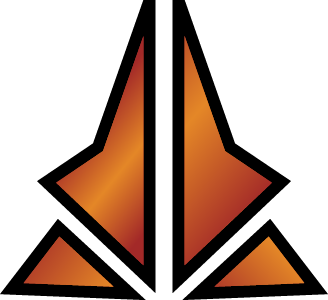

Proyeto Modal Js

Nissa Revane
Magic The Gathering
Nissa Revane, devota y profundamente conectada con la tierra, emplea la magia elemental. Es capaz de canalizar las líneas místicas de maná de un plano y dar vida a la tierra. Cuando era joven, Nissa fue expulsada de su aldea élfica natal por sus terribles visiones y sus poderes druídicos. Siguió la voz de la propia tierra, Zendikar, que le pedía que la ayudara a eliminar los peligros que dormían en su interior.
Thresh, El carcelero implacable
Personaje de Legue of legends
Sádico y astuto, Thresh es un espíritu ambicioso e incansable de las Islas de la Sombra. Otrora el custodio de incontables secretos arcanos, fue consumido por un poder mayor a la vida o la muerte. Ahora, se alimenta del tormento y quebranta a otros con sus lentas e insoportables torturas. Sus víctimas sufren más allá de su breve transición desde el mundo mortal cuando Thresh inflige agonía en sus almas y las aprisiona en su linterna maldita para torturarlas por toda la eternidad.